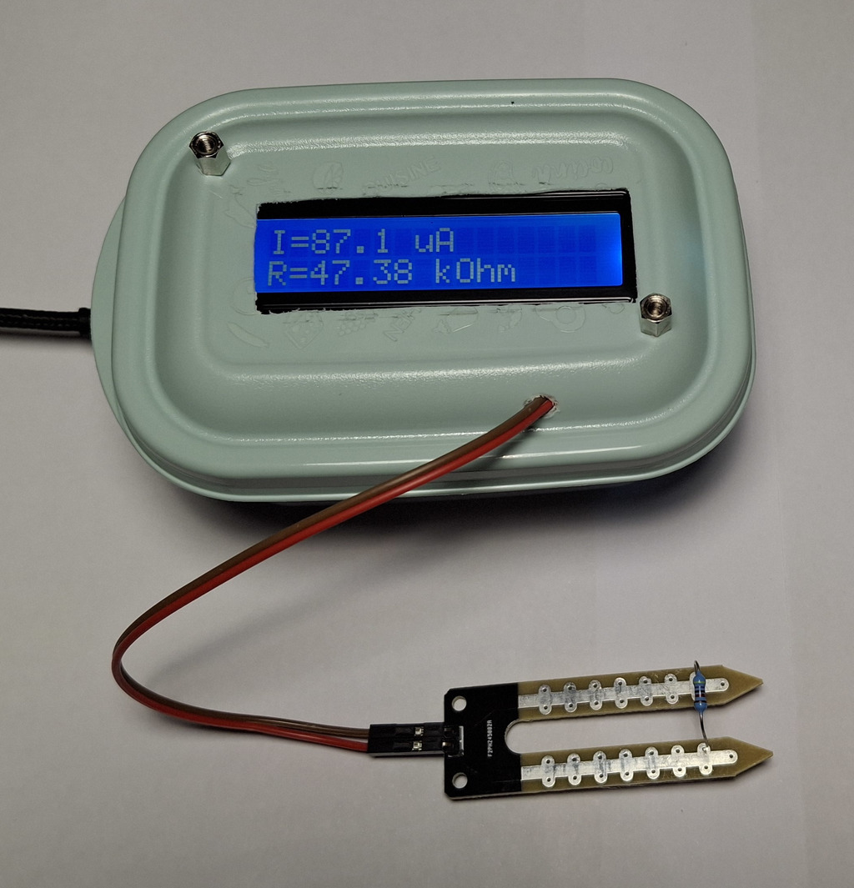
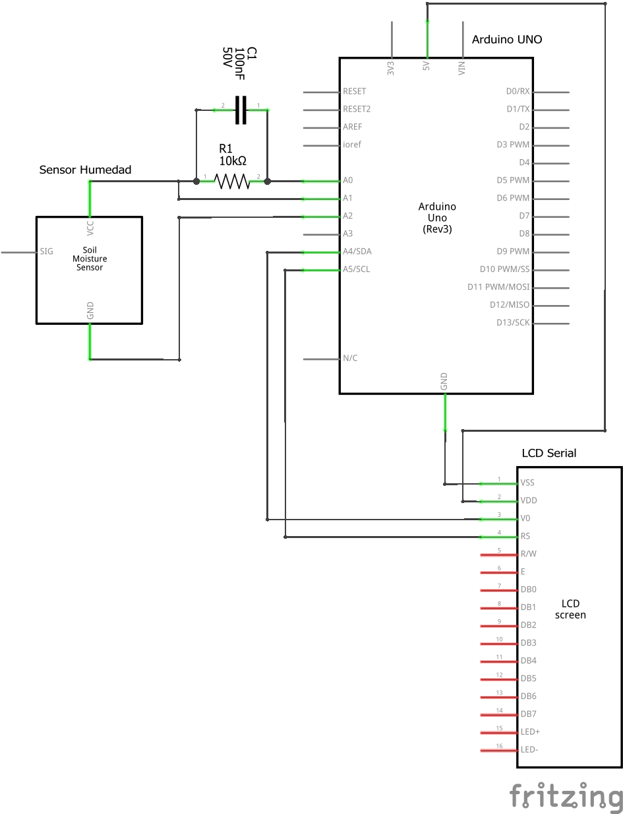
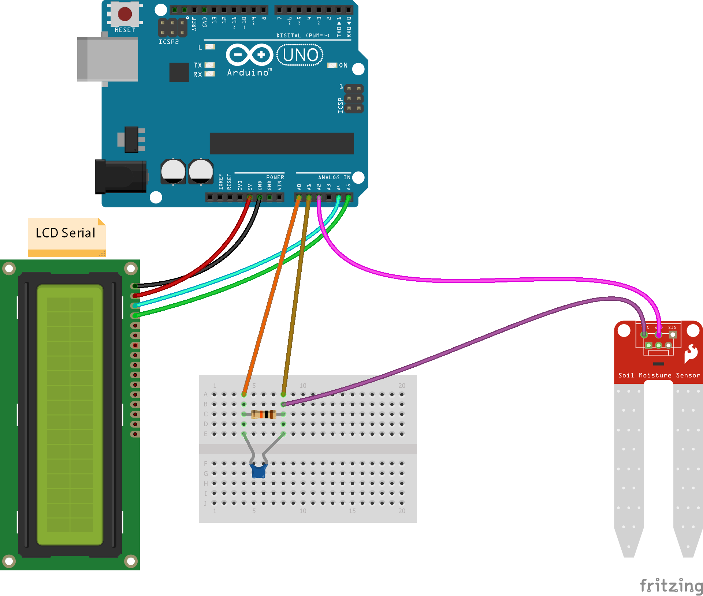
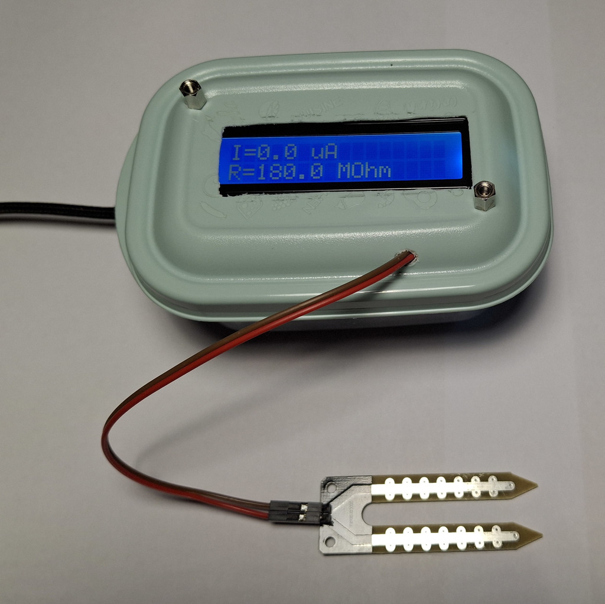
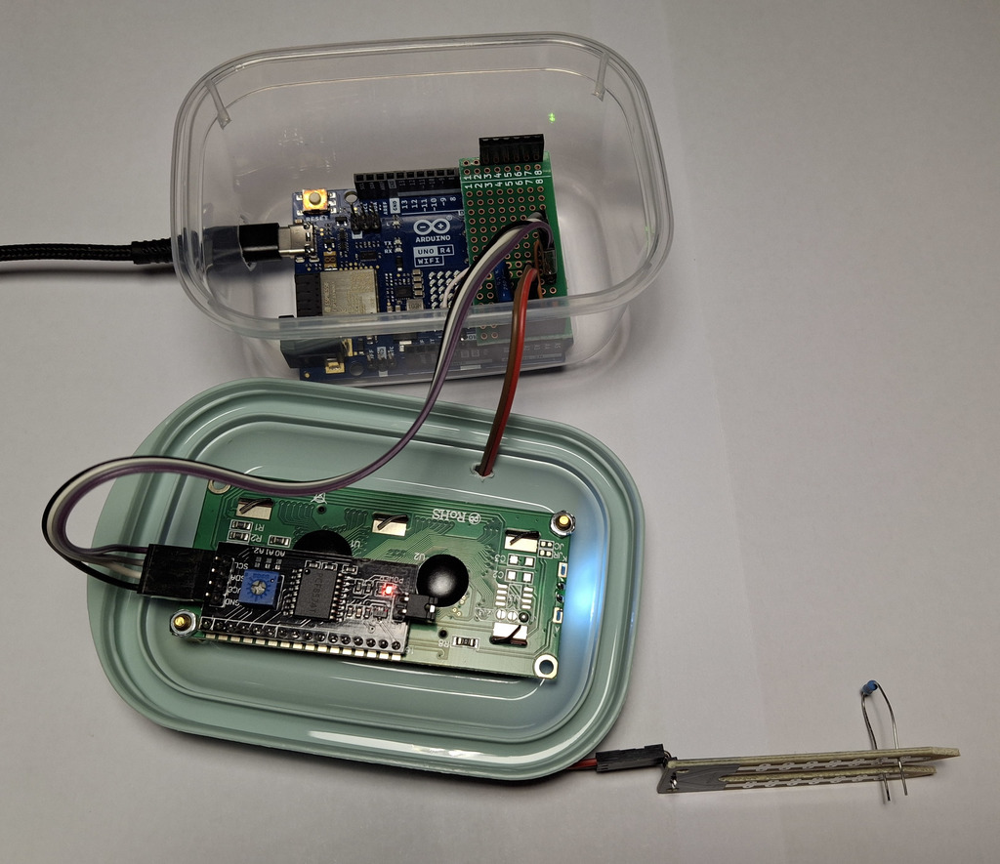
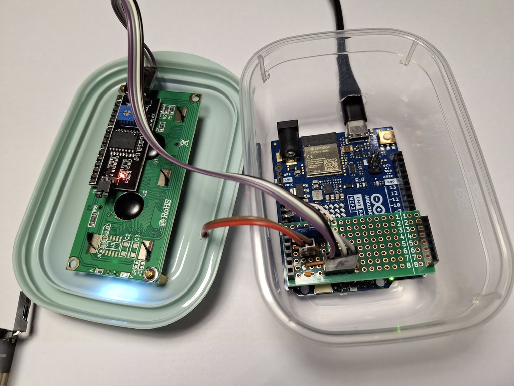

Conductímetro¶
Este proyecto tiene como objetivo construir un medidor de conductividad para sólidos y líquidos basado en Arduino. El medidor sirve para medir la conductividad o la resistencia al paso de la corriente eléctrica de diferentes sustancias y del agua con diferentes solutos.
Este medidor se puede usar en un laboratorio de Física y Química o de Biología y Geología para realizar experimentos.
{kind=link}

Índice de contenidos:
Puntos a destacar¶
- Ventajas:
- La medición de conductividad se realiza con un divisor resistivo, lo que permite tener un gran margen de medida, desde pocos ohmios hasta decenas de megaohmios.
- El divisor resistivo está conectado a tensión mediante salidas digitales del Arduino, lo que permite mantener la tensión solo un pequeño tiempo durante la medición. La mayor parte del tiempo el sensor no tiene tensión y esto reduce mucho la degradación por la electrólisis que provoca la tensión de medida. Además, la medida se realiza con tensiones alternas, más adecuado para un conductímetro que las tensiones continuas.
- Utiliza el nuevo modelo de Arduino UNO Revisión 4, que tiene un conversor analógico-digital de mayor resolución, 14 bits (16384 puntos) frente al conversor tradicional del Arduino UNO Revisión 3 que solo tenía 10 bits de resolución (1024 puntos).
- Inconvenientes:
- La medida de resistencia (o conductividad), al realizarse con un divisor resistivo, tiene poca resolución y maneja un error, en ocasiones, mayor del 1%.
- Al conectar el sensor a tensión mediante salidas digitales, se añade una pequeña resistencia extra de unos 40 Ohmios correspondiente a las salidas digitales.
- El nuevo modelo de Arduino UNO Revisión 4 utilizado no está tan disponible en tiendas ni es tan económico como la revisión anterior.
- Al utilizar un divisor resistivo propio, es necesario montarlo en una placa de prototipos para soldadura, en vez de poder utilizar un sensor estándar de conductividad.
Materiales y herramientas¶
Listado de materiales y herramientas necesarios para construir el proyecto.
- Materiales:
- Placa de control: Arduino Uno R4
- Cable de conexión USB C - USB A
- Cargador para móvil de 5V (Opcional)
- Display LCD de 16x2 caracteres, con conexión serie I2C
- Sensor de humedad para líquidos, con dos electrodos
- Resistencia de 10kOhm (preferiblemente del 1%)
- Condensador 100nF 50V (preferiblemente de película de poliéster/polietileno)
- Cables de conexión unifilares
- Cables Dupont hembra-hembra
- Placa de prototipos (para realizar las pruebas)
- Placa para soldar prototipos (para el montaje final)
- Tira de pines macho 1x40 paso 2.54mm
- Caja de plástico
- Tornillos y separadores de paso de 3mm
- Herramientas:
- Soldador y soporte de soldador
- Cable de estaño-plomo para soldar
- Alicates de punta fina
- Alicates de corte
- Segueta con hilo (para cortar la caja de plástico)
- Barrena o broca para iniciar los agujeros de la segueta
- Pequeña lima plana para madera
Esquema eléctrico¶
{kind=link}

Esquema eléctrico del conductímetro.¶
Cableado eléctrico¶
{kind=link}

Montaje y cableado del conductímetro.¶
Programa de Arduino¶
A continuación se muestra el código del programa con el que hay que programar la placa de control Arduino UNO R4.
Este programa hace funcionar la placa como conductímetro midiendo la conductividad y calculando y mostrando los valores en el display LDC y por el puerto serie.
1 2 3 4 5 6 7 8 9 10 11 12 13 14 15 16 17 18 19 20 21 22 23 24 25 26 27 28 29 30 31 32 33 34 35 36 37 38 39 40 41 42 43 44 45 46 47 48 49 50 51 52 53 54 55 56 57 58 59 60 61 62 63 64 65 66 67 68 69 70 71 72 73 74 75 76 77 78 79 80 81 82 83 84 85 86 87 88 89 90 91 92 93 94 95 96 97 98 99 100 101 102 103 104 105 106 107 108 109 110 111 112 113 114 115 116 117 118 119 120 121 122 123 124 125 126 127 128 129 130 131 132 133 134 135 136 137 138 139 140 141 142 143 144 145 146 147 148 149 150 151 152 153 154 155 156 157 158 159 160 161 162 163 164 165 166 167 168 169 170 171 172 173 174 175 176 | /*
Conductímetro basado en Arduino.
Copyright (c) 2025 Carlos Félix Pardo Martín.
This program is free software: you can redistribute it and/or modify
it under the terms of the GNU General Public License as published by
the Free Software Foundation, either version 3 of the License, or
(at your option) any later version.
This program is distributed in the hope that it will be useful,
but WITHOUT ANY WARRANTY; without even the implied warranty of
MERCHANTABILITY or FITNESS FOR A PARTICULAR PURPOSE. See the
GNU General Public License for more details.
You should have received a copy of the GNU General Public License
along with this program. If not, see <https://www.gnu.org/licenses/>.
*/
#include <Wire.h>
#include <LiquidCrystal_I2C.h>
const float resistencia_pin = 40.0; // Resistencia del pin de salida del Arduino
const float resistencia_R1 = 10000.0; // Resistencia R1 en ohmios
const float v_alimentacion = 5.0; // Tensión de alimentación en voltios
const float to_micros = 1000000.0; // Convertir una unidad en micro-unidades
const float pasos_adc = 16 * 1024.0 - 1; // Pasos de conversión máximos del ADC
const float resistencia_max = round(pasos_adc * resistencia_R1 * 0.000001) * 1000000;
unsigned long tiempo_anterior = 0; // Variable del temporizador
unsigned long intervalo = 1000; // Intervalo de temporización. 1000ms = 1s
LiquidCrystal_I2C lcd(0x27, 16, 2);
void setup() {
descarga_condensador();
Serial.begin(9600);
lcd.init(); // Inicializar LCD
lcd.backlight(); // Encender backlight
analogReadResolution(14); // 14 bits de resolución en el ADC
}
void loop() {
int vr1, vr2;
float current, r2;
// Si ha pasado un segundo de intervalo,
// entonces ejecuta el código del conductímetro
if (millis() - tiempo_anterior > intervalo) {
tiempo_anterior += intervalo;
vr1 = adc_read_vr1();
vr2 = pasos_adc - vr1;
current = adc_to_current(vr1);
r2 = adc_to_resistance(vr1, vr2);
lcd_output(current, r2);
serial_output(current, r2);
}
}
void descarga_condensador(void) {
pinMode(A0, OUTPUT);
pinMode(A1, OUTPUT);
pinMode(A2, OUTPUT);
digitalWrite(A0, LOW);
digitalWrite(A1, LOW);
digitalWrite(A2, LOW);
delayMicroseconds(50);
}
int adc_read_vr1() {
int adc1, adc2;
int delay = 4000;
// Establecer A1 como pin de entrada analógica
pinMode(A1, INPUT);
// Conectar tensión positiva en el sensor
digitalWrite(A0, LOW);
digitalWrite(A2, HIGH);
delayMicroseconds(delay);
// Leer el valor de tensión en R1
adc1 = analogRead(A1);
// Descargar el condensador
descarga_condensador();
pinMode(A1, INPUT);
// Conectar tensión negativa en el sensor
digitalWrite(A0, HIGH);
digitalWrite(A2, LOW);
delayMicroseconds(delay);
// Leer el valor de tensión en R1
adc2 = pasos_adc - analogRead(A1);
// Descargar el condensador y devolver la lectura
descarga_condensador();
return (adc1 + adc2)>>1;
}
float adc_to_current(int vr1) {
return vr1 * to_micros * v_alimentacion / (pasos_adc * resistencia_R1);
}
float adc_to_resistance(int vr1, int vr2) {
if (vr1 == 0) {
// Si no hay corriente, devolver la mayor resistencia posible.
return resistencia_max;
}
return vr2 * resistencia_R1 / vr1 - resistencia_pin;
}
int lcd_output(float current, float r2) {
lcd.setCursor(0, 0); // Columna 0, fila 0
lcd.print("I=");
lcd.print(current, 1);
lcd.print(" uA ");
// Si no hay corriente, imprime la resistencia máxima medible
if (current == 0) {
lcd.setCursor(0, 1); // Columna 0, fila 1
lcd.print("R>");
lcd.print(resistencia_max * 0.000001, 0);
lcd.print(" MOhm");
} else {
lcd.setCursor(0, 1); // Columna 0, fila 1
lcd.print("R=");
// Imprime solo 4 cifras significativas de R
if (r2 < 10000) {
lcd.print(r2, 0);
lcd.print(" Ohm");
} else if (r2 < 100000) {
lcd.print(r2 * 0.001, 2);
lcd.print(" kOhm");
} else if (r2 < 1000000) {
lcd.print(r2 * 0.001, 1);
lcd.print(" kOhm");
} else if (r2 < 10000000) {
lcd.print(r2 * 0.000001, 3);
lcd.print(" MOhm");
} else if (r2 < 100000000) {
lcd.print(r2 * 0.000001, 2);
lcd.print(" MOhm");
} else {
lcd.print(r2 * 0.000001, 1);
lcd.print(" MOhm");
}
lcd.print(" ");
}
}
// Salida por el puerto serie, separado por tabuladores
int serial_output(float current, float r2) {
Serial.print("I=\t");
Serial.print(current, 1);
Serial.print("\tuA");
Serial.print("\tR=\t");
Serial.print(r2, 0);
Serial.print("\tOhm");
Serial.println();
}
|
Fotografías del proyecto¶
Algunas fotografías del proyecto final, montado dentro de una caja y con los componentes soldados en una PCB de prototipos para soldar.
{kind=link}

Conductímetro basado en Arduino sin resistencia en el sensor. La medición muestra una resistencia mayor de 180 megaohmios.¶
Conductímetro con una resistencia de 47000 ohmios en el sensor.¶
{kind=link}

Interior de la caja del conductímetro I.¶
{kind=link}

Interior de la caja del conductímetro II.¶